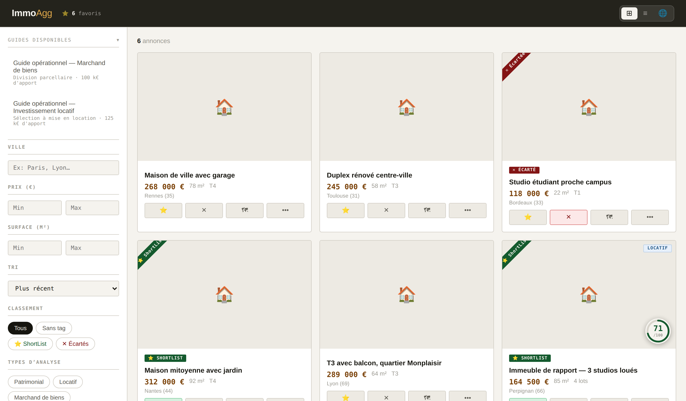

Recevez le signal
Consultez un flux d’annonces triées et qualifiées en amont pour concentrer votre attention là où une opération peut exister.
FLUX QUALIFIÉLa veille immobilière des investisseurs actifs
BienAuFait transforme le bruit des portails immobiliers en opportunités exploitables : des annonces déjà triées, vos trouvailles centralisées et chaque bien confronté aux chiffres qui comptent.
Pour les investisseurs qui réalisent au moins 2 acquisitions par an et les marchands de biens qui passent à l’action.

Les investisseurs réguliers ne manquent pas d’annonces. Ils manquent d’un système pour repérer le signal, documenter une hypothèse et écarter rapidement les faux positifs.
BienAuFait raccourcit le chemin entre « cette annonce semble intéressante » et « voici pourquoi je fais — ou non — une offre ».
Deux portes d’entrée. Une seule méthode de qualification.
Consultez un flux d’annonces triées et qualifiées en amont pour concentrer votre attention là où une opération peut exister.
FLUX QUALIFIÉCapturez depuis l’extension Chrome le prix, la surface, les photos et la description d’une annonce, sans ressaisie.
EXTENSION CHROMEFiltrez, classez en ShortList, explorez sur la carte et confrontez le prix demandé aux transactions DVF du secteur.
GALERIE + CARTEMesurez rendement, cash-flow, marge, risques et conditions de réussite avant de mobiliser votre temps et votre capital.
SCORE + VERDICTChaque analyse restitue un verdict lisible, ses hypothèses et les conditions qui rendent l’opération défendable.

Rendement brut et net, revenus par lot, coût total, cash-flow, scénarios de financement, risques et leviers.
Faisabilité, complexité, marge nette, prix maximum d’acquisition et écart à négocier.
Qualité de l’emplacement, accessibilité, valeur prudente, potentiel et scénarios financiers.
Prix objectivéComparables issus des mutations DVF, médiane locale et fourchette de contre-offre.
Décision explicablePoints forts, vigilances, risques, conditions et sources restent visibles.
Mémoire d’investisseurNotes, contacts, visites et statuts suivent chaque opportunité dans le temps.
Passez du volume à la valeur
Centralisez votre veille. Qualifiez plus vite. Décidez avec méthode.